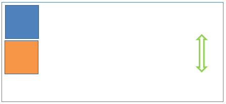
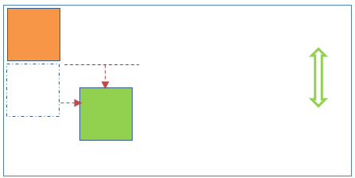
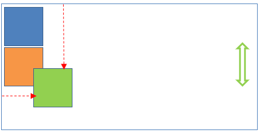
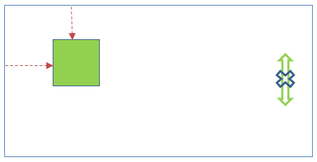

The 'position' property in CSS is one of the most important properties in web design. Working with the left, right, bottom, top and/or z-index properties, it defines the position of elements on a document, and is ultimately used to design the layout of webpages (i.e. what the end user sees).
For CSS beginners, it can be quite confusing and hard to understand the difference between three of the most common position property options to switch from the static default: relative, absolute and fixed. Here is a quick overview of how they work:
position: relative;
When set to 'relative', elements are moved away from its default (static) position on the page. Adjustments can be made with the left, right, top and bottom properties to define its new position exactly.
These elements still remain in the normal flow of the document, and other content will not adjust to fit in any gaps left by the relative-positioned element.

position: absolute;
With the 'absolute' position property, elements are positioned relative to their parent element/nearest positined ancestor. The parent element will need to also have a position value asigned other than static (the default).
Notably, these elements are removed from the flow of the document. This means that no space is created for this element in the, and it is ignored by other elemets (i.e. other elements will behave as if this elelment is not in the document).

position: fixed;
The 'fixed' position property also removes an element from the normal flow of the document. However, unlike 'absolute', they are positioned relative to the html element. A fixed element does not leave a gap on the page where it would have statically occupied.
This means that these elements are not affected by scrolling, and will always stay in the same position on the viewport or screen.
